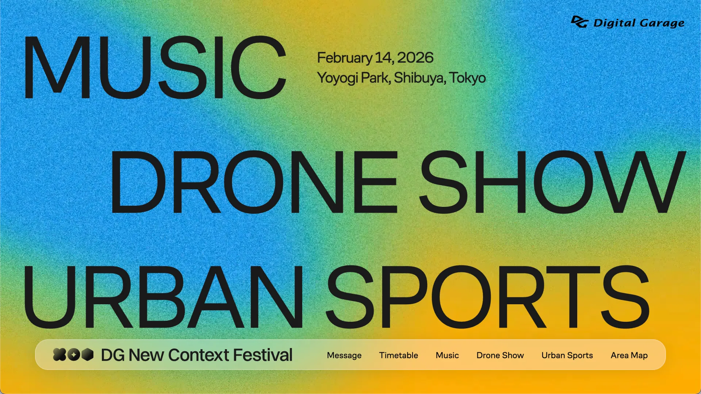
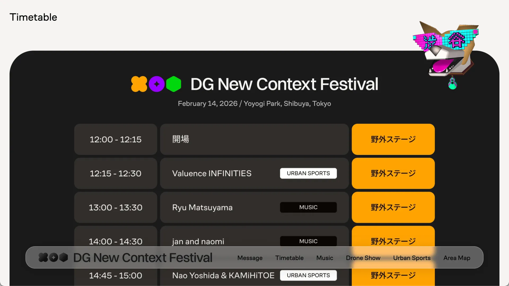
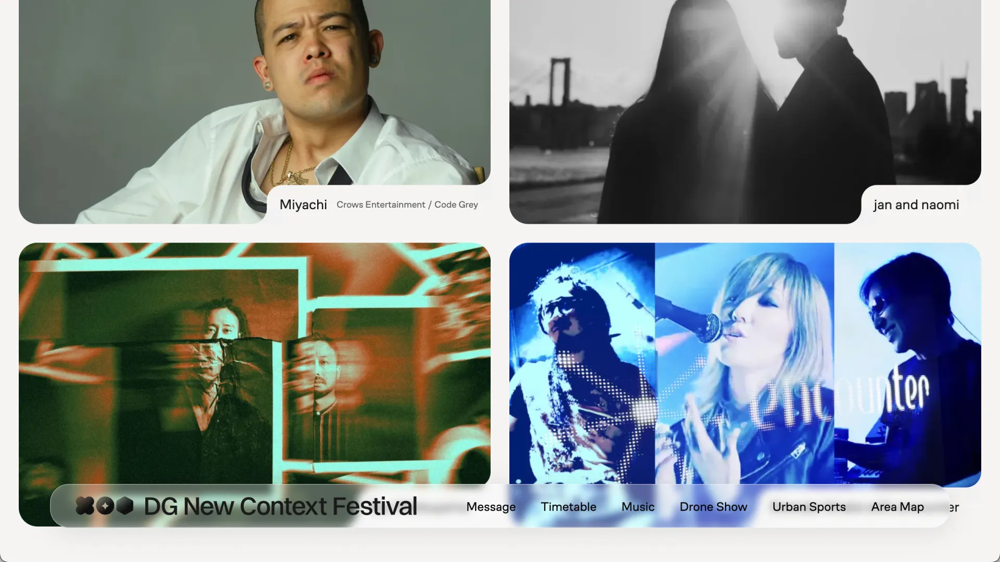
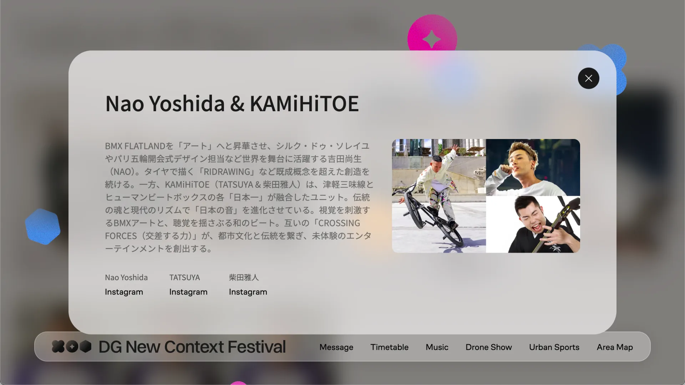

New Context Festival
UI Engineer & Frontend Developer
The DG New Context Festival site acted as the primary digital touchpoint for the event announcements, program content, and viewing entry. The overall design direction emphasized motion and energy.
I joined primarily on implementation: motion systems, interaction behavior, performance stability, and analytics reporting.
Challenges
- Motion-heavy design intent needed to remain smooth and readable.
- Mobile-dominant traffic meant lower-end devices had to be considered.
- Peak hour surges required stability under load and predictable behavior.
- Stakeholder reporting required clean GA4 summaries after the event.
Goals
- Deliver motion that supports content—not distracts from it.
- Prevent scroll-jack and layout shift across devices (especially iOS Safari).
- Keep interactions consistent with clear entry/exit states.
- Provide actionable GA4 reporting to evaluate performance.
Results
The site maintained stable performance during peak event windows while preserving the intended motion-forward experience. Motion supported navigation and pacing without compromising readability.


